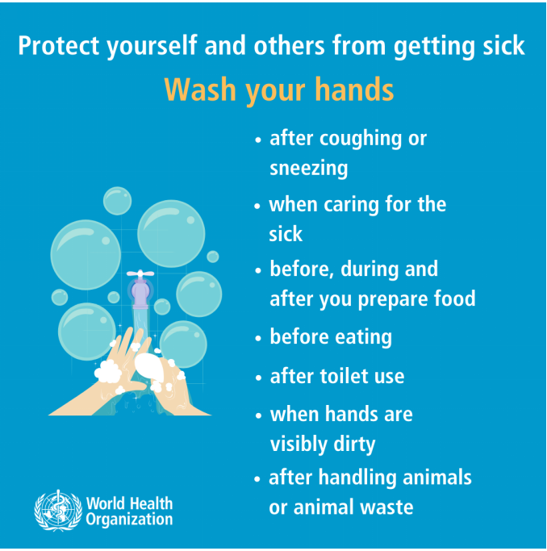

The U.S. Food and Drug Administration (FDA) has given emergency use authorization for two COVID-19 vaccines, the Pfizer/BioNTech COVID-19 vaccine and the Moderna COVID-19 vaccine. A vaccine might prevent you from getting COVID-19 or prevent you from becoming seriously ill from COVID-19 if you get the COVID-19 svirus. You can take additional steps to reduce your risk of infection.